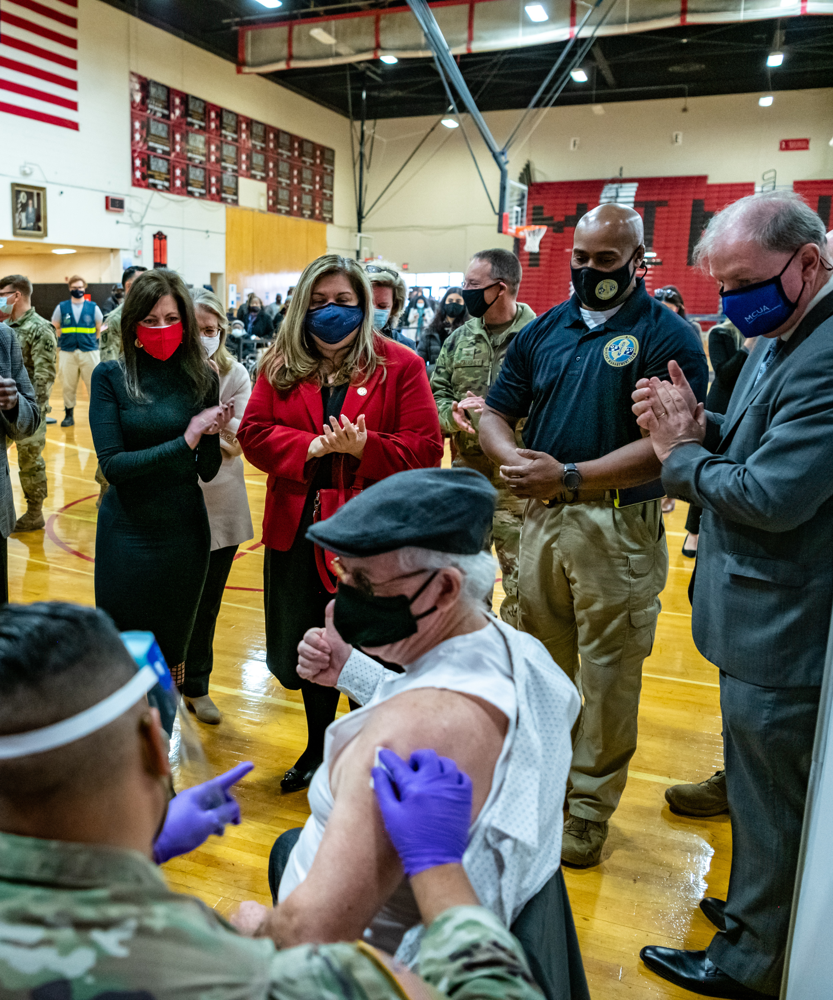

Directions: The five stations below are the modern record of this lesson, from the election of 2000 to the pandemic. Study each station and answer its questions. At every station, name the older argument of this course that the record continues: the founding, the Civil War era, the New Deal, the movement years, or the conservative turn. Cite the words in the record that support your pairing. In Part 2, write the course's closing verdict.
Source: Bush v. Gore, 531 U.S. 98 (2000), per curiam opinion (Cornell Legal Information Institute), as carried in the audited TPSP bank record bush-v-gore-2000. Cuts are marked with ellipses.
When the state legislature vests the right to vote for President in its people, the right to vote as the legislature has prescribed is fundamental; and one source of its fundamental nature lies in the equal weight accorded to each vote and the equal dignity owed to each voter. ...
The recount mechanisms implemented in response to the decisions of the Florida Supreme Court do not satisfy the minimum requirement for non-arbitrary treatment of voters necessary to secure the fundamental right. ... The problem inheres in the absence of specific standards to ensure its equal application. ...
Our consideration is limited to the present circumstances, for the problem of equal protection in election processes generally presents many complexities.
The Court stopped a recount in an election Florida certified at 537 votes. What rule does the opinion lay down about how votes must be counted, in its own words? Then pair the station: which older argument of the course does a court settling a presidential election continue, and what words in the opinion support the pairing?
Source: District of Columbia v. Heller, 554 U.S. 570 (2008), opinion of the Court by Justice Scalia (Justia transcription), as carried in the audited TPSP bank record dc-v-heller-2008. Cuts are marked with ellipses.
We consider whether a District of Columbia prohibition on the possession of usable handguns in the home violates the Second Amendment to the Constitution. ...
In sum, we hold that the District's ban on handgun possession in the home violates the Second Amendment, as does its prohibition against rendering any lawful firearm in the home operable for the purpose of immediate self-defense. ...
But the enshrinement of constitutional rights necessarily takes certain policy choices off the table. These include the absolute prohibition of handguns held and used for self-defense in the home.
State the holding in one sentence, naming what the District may no longer do. The opinion reads an amendment written in 1791 to settle a law of the twenty first century. Pair the station with the older argument it continues, and cite the sentence that shows the Court claiming the amendment, not present policy, decides the case.
Source: Obergefell v. Hodges, 576 U.S. 644 (2015), opinion of the Court by Justice Kennedy (Supreme Court slip opinion), as carried in the audited TPSP bank record obergefell-v-hodges-2015. Cuts are marked with ellipses.
The Court, in this decision, holds same-sex couples may exercise the fundamental right to marry in all States. It follows that the Court also must hold ... that there is no lawful basis for a State to refuse to recognize a lawful same-sex marriage performed in another State on the ground of its same-sex character. ...
Their hope is not to be condemned to live in loneliness, excluded from one of civilization's oldest institutions. They ask for equal dignity in the eyes of the law. The Constitution grants them that right.
State both halves of the holding: what every state must license, and what every state must recognize. In 2003 no state licensed such marriages. Pair the station with the older argument it continues, the amendment it rests on was written in which era of the course, and what phrase in the opinion carries that era's claim into 2015?
Source: Regents of the University of California v. Bakke, 438 U.S. 265 (1978), opinion of Powell, J. (Cornell Legal Information Institute), as carried in the audited TPSP bank record regents-uc-v-bakke-1978; Students for Fair Admissions, Inc. v. President and Fellows of Harvard College, 600 U.S. 181 (2023), syllabus of the slip opinion (Supreme Court of the United States, supremecourt.gov). Cuts are marked with ellipses.
Bakke, 1978: In such an admissions program, race or ethnic background may be deemed a plus in a particular applicant's file, yet it does not insulate the individual from comparison with all other candidates for the available seats. ... The fatal flaw in petitioner's preferential program is its disregard of individual rights as guaranteed by the Fourteenth Amendment.
Students for Fair Admissions, 2023: But the Court has permitted race-based college admissions only within the confines of narrow restrictions: such admissions programs must comply with strict scrutiny, may never use race as a stereotype or negative, and must, at some point, end. Respondents' admissions systems fail each of these criteria and must therefore be invalidated under the Equal Protection Clause of the Fourteenth Amendment.
Read the two records as one argument. What did Powell's opinion permit in 1978, and what test does the 2023 syllabus say such programs must pass? The same amendment decides both cases, forty five years apart. Pair the station with the older argument it continues, and name the claim about remedy, first made in the movement years, that the pair of decisions answers in two different ways.
Source: Coronavirus Aid, Relief, and Economic Security Act (CARES Act), Public Law 116-136, Sec. 1 and Division A (Statutes at Large, via GovInfo); Centers for Disease Control and Prevention, COVID-19 Surveillance After Expiration of the Public Health Emergency Declaration, Morbidity and Mortality Weekly Report, 2023. Cuts are marked with ellipses.
This Act may be cited as the Coronavirus Aid, Relief, and Economic Security Act or the CARES Act. ...
The act committed more than two trillion dollars in March 2020, including direct payments to households, expanded unemployment assistance under its Pandemic Unemployment Assistance program, and loans meant to keep workers on the payrolls of closed businesses. (Summary of the statute's provisions, from the enrolled text.)
By April 26, 2023, more than 104 million U.S. COVID-19 cases, 6 million related hospitalizations, and 1.1 million COVID-19-associated deaths were reported to CDC and summarized on CDC's COVID Data Tracker. ...

The station pairs a statute with a count. What did the federal government do in March 2020, and what does the CDC record show the crisis cost by April 2023? Pair the station with the older argument it continues: which earlier era of the course first built the expectation that a national crisis brings a federal answer at this scale, and what in the station supports the pairing?
This lesson closes the course. The five stations, with the reading, are the modern end of an evidence file that began with the founding. Pair first, then judge.
The pairings. Enter each station number beside the older argument it continues, with one quoted phrase from the station as the evidence for its place: the founding, the Civil War era, the New Deal, the movement years, or the conservative turn. One era may hold more than one station.
Your verdict. State the strongest single claim the whole year's documents support about what changed in America and what did not. State the claim in the first two sentences, then support it from at least three stations, citing stations by number, and from at least one document you remember from an earlier unit, named by its date.
The strongest counterclaim. State the strongest case against your verdict, at full strength, from the documents. Then answer it: what does your verdict explain that the counterclaim cannot?
The rule, and the pairing. The rule, in the opinion's words: the right to vote carries equal weight accorded to each vote and equal dignity owed to each voter, and a recount must satisfy the minimum requirement for non-arbitrary treatment of voters, with specific standards to ensure the equal application of the rule that the intent of the voter governs. A recount run county by county under no uniform standard violated the Equal Protection Clause, and the Court stopped it. Pairing: the founding. The opinion continues the founding era argument over how the people's choice is counted and who referees the count, the argument the Constitution answered with the Electoral College and the states' power over election machinery, and the words that support the pairing are the opinion's own frame: when the state legislature vests the right to vote for President in its people, that right is fundamental. A strong answer also notes the sentence the Court used to limit itself, our consideration is limited to the present circumstances, and weighs a holding that declines to govern the next case. Grade the pairing and its evidence only.
The holding, and the pairing. The holding: the District of Columbia may no longer ban possession of usable handguns in the home or require lawful firearms in the home to be kept inoperable, because the Second Amendment protects an individual's right to keep a handgun in the home for self-defense. Pairing: the founding. The sentence that shows the amendment deciding the case is the opinion's closing frame in this station: the enshrinement of constitutional rights necessarily takes certain policy choices off the table, including the absolute prohibition of handguns held and used for self-defense in the home. The argument continued is the founding argument over what the Bill of Rights removes from ordinary politics and who, the legislature or the court reading the amendment, enforces the removal. Answers that pair Heller with the conservative turn earn credit only if they reckon with the opinion's own method, which rests the result on the 1791 text rather than on any modern program.
Both halves, and the pairing. The holding has two halves. Every state must license marriages between two people of the same sex, since same sex couples may exercise the fundamental right to marry in all States. Every state must also recognize such marriages performed in another state, since there is no lawful basis for a State to refuse to recognize a lawful same-sex marriage performed in another State on the ground of its same-sex character. Pairing: the Civil War era, carried through the movement years. The decision rests on the Fourteenth Amendment, ratified in 1868, and the phrase that carries the era's claim into 2015 is equal dignity in the eyes of the law, the equality claim the movement years pressed in the streets and the courts before a court stated it for marriage in 2015. The change of scale belongs in strong answers: in 2003 no state licensed such marriages and in 2004 Massachusetts became the first, so the Court answered for the whole country a question state politics had answered fifty ways.
The pair read whole, and the pairing. Powell's opinion in 1978 struck down the Davis medical school's special admissions program for its disregard of individual rights as guaranteed by the Fourteenth Amendment, and in the same opinion permitted race to be deemed a plus in a particular applicant's file, weighed against all other candidates. The 2023 syllabus states the terms on which the Court had permitted such programs: they must comply with strict scrutiny, may never use race as a stereotype or negative, and must, at some point, end. The Harvard and North Carolina systems failed each criterion and were invalidated under the Equal Protection Clause. Pairing: the movement years. The claim about remedy under argument across the forty five years is the claim first made at Howard University in 1965, that the nation should seek equality as a fact and equality as a result and not equality as a right only. Bakke answered the claim by narrowing remedy to a factor in a file; Students for Fair Admissions answered it by ending the factor's use in admissions. Grade the reading of the two records, never the side a student takes on the result.
The act, the count, and the pairing. In March 2020 the federal government enacted the CARES Act, Public Law 116-136, committing more than two trillion dollars, including direct payments to households, expanded unemployment assistance, and loans meant to keep workers on payrolls. The CDC record shows the cost of the crisis the act answered: by April 26, 2023, more than 104 million cases, 6 million related hospitalizations, and 1.1 million COVID-19-associated deaths had been reported to CDC. Pairing: the New Deal. The expectation that a national collapse brings a federal answer at national scale was built in 1933 and after, and the station supports the pairing in its proportions: a single statute, passed within weeks of the emergency's onset, moving sums measured in trillions through programs, including unemployment assistance, that the New Deal era first built. Answers should also mark the difference the documents show: the New Deal programs were built to last, while the CARES Act's largest provisions were written as emergency measures with end dates, a distinction students can defend from the act's own design as summarized at the station.
Full credit should be awarded if the verdict:
Teacher note on grading. This file grades evidence and pairing only. Students will reach opposed verdicts from the same five stations, and both directions can earn full credit; a verdict fails when a station is misquoted, a holding is misstated, or a claim about a contested event is asserted without its attribution. The most common failure is the list disguised as a verdict. Send those back to the first two sentences.